Metric Volume

Volume is the amount of 3-dimensional space something takes up.
The two most common measurements of volume are:
- milliliters
- liters
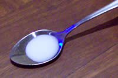
A milliliter is a very small amount of liquid.
Here's a milliliter of milk in a teaspoon.
It only fills the bottom of the teaspoon!
When we collect 20 drops of water, we have about 1 milliliter:
| 20 drops of water | 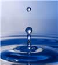 |
make about 1 milliliter |
And a teaspoon can hold about five milliliters:
| 1 teaspoon of liquid | 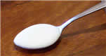 |
is about 5 milliliters |

Milliliters are shortened to mL, so "100 mL" means "100 milliliters".
They can also be written mL with a lower case l, but that can be confused with "1", so avoid that.
Here we have 150 mL of milk in a measuring cup.
It doesn't say "150" ... it says "50" ... but it is half-way between 100 and 200 so you can figure out it is 150 mL.
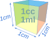
1 milliliter (mL) is also 1 cubic centimeter (cc)
In other words 1 milliliter is exactly the same as a little cube that's 1 cm on each side (1 cubic centimeter).
How many cubic centimeters can fit in this teaspoon?
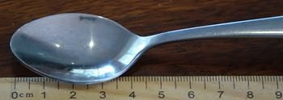
The bowl of this teaspoon is about 4 cm long and 2 cm wide.
If it was uniformly full to exactly 1cm high it would contain 8 of those 1cm × 1cm × 1cm cubes, making 8 cc.
But because of its shape it only holds about 5 cc (or 5 mL).
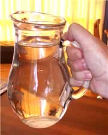
This jug has exactly
1 liter of water in it.
Liter
A liter is just a bunch of milliliters put all together. In fact, 1000 milliliters makes up 1 liter:
1 liter = 1,000 milliliters
Liters are often written as L (for short), so "3 L" means "3 Liters" (some people use lowercase l, but that looks too much like 1).
Milk, soda and other drinks are often sold in liters.
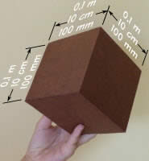 |
A cube that's 0.1 meters (10 cm or 100 mm) |
|
and a square meter that's 1 millimeter thick also contains 1 liter. |
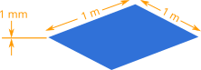 |
The next time you are at the store take a minute and look on the labels to see how many liters (or milliliters) are in each container!
Other Volume Measurements
You may come across these other volume measurements:
Cubic Millimeter
A Cubic Millimeter is a cube that's 1 millimeter on each side.
It is very small, and we need 1,000 Cubic Millimeters to make just one milliliter.
It is also one-millionth of a liter, and one-billionth of a cubic meter.
Cubic Centimeter (cc)
A Cubic Centimeter (abbreviated cc or cm3) is a cube that's 1 centimeter on each side.
It is the same as 1 milliliter (1 mL):
1 cc = 1 mL
So it is one-thousandth of a liter, or one-millionth of a cubic meter.
Deciliter (dL)
A deciliter (abbreviated dL) is 1/10th of a liter, or 100 mL:
1 dl = 100 mL
Cubic Meter (m3)
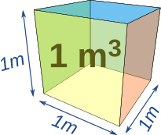
The basic unit of volume is a cube that's 1 meter on each side.
The Unit is written m3 (cubic meters).
It is equal to 1,000 liters.
1 m3 = 1,000 liters
Megaliters (ML)
A Megaliter is a million liters (1,000,000 L). Useful for measuring large quantities of water, such as in dams and small lakes.
1 ML = 1,000 m3 = 1,000,000 liters
Cubic Kilometer (km3)
A Cubic Kilometer (abbreviated km3) is a cube that's 1 kilometer on each side. It is very large!
It is equal to 1,000,000,000 cubic meters (1 billion m3) or 1,000,000,000,000 liters (1 trillion L).
Useful for measuring large lakes, seas and oceans.
Lake Baikal, the largest continental lake in the world, contains 23,600 km3 of water.
The Pacific Ocean contains 700,000,000 km3 of water.
More Examples
A liter (L) is:
- a bit more than a quart (US measure)
- about the quantity in a sports drink bottle
- very close to the volume of a kilogram of water
A milliliter (mL) is
- about the size of a grape
- a fifth of a teaspoon
- exactly one cubic centimeter (1 cc)
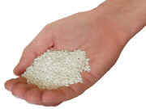
A "handful" (not an exact measure!) is about 40 mL
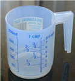
A cup is 250 mL, so 4 cups make a liter
Summary
| Unit | Abbreviation | Comparison |
|---|---|---|
| Cubic Millimeter | mm3 | |
| Milliliter, or Cubic Centimeter |
mL cm3 (cc) |
1 mL = 1,000 mm3 |
| Liter | L | 1 L = 1,000 mL |
| Cubic Meter | m3 | 1 m3 = 1,000 L |
| Megaliter | ML | 1 ML = 1,000 m3 |
Each step up in this table is 1,000 times larger in volume.